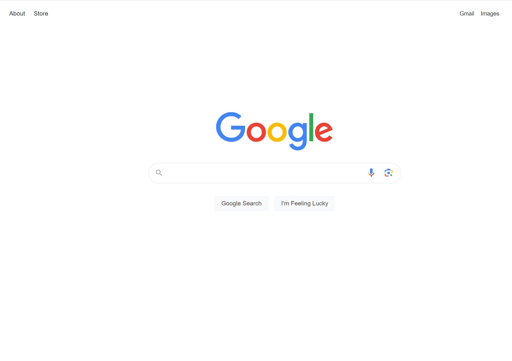
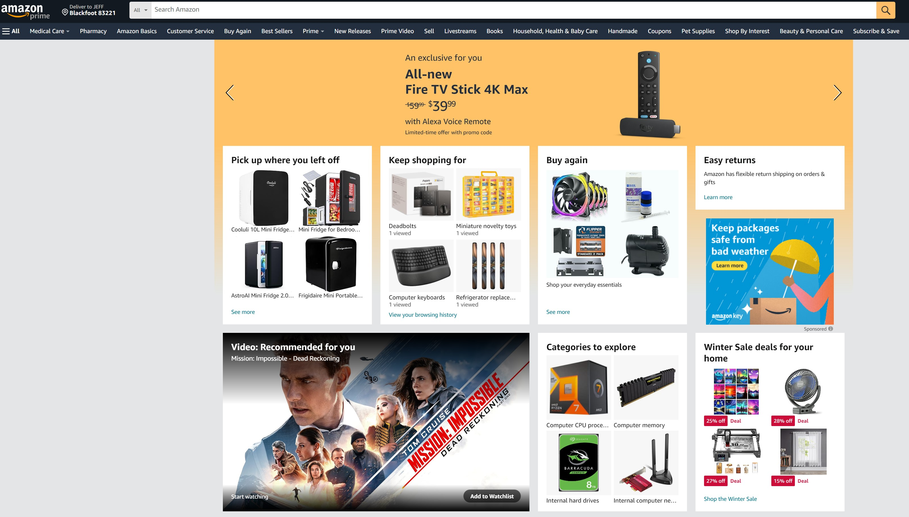

White Space and Clean Design
Whitespace is the area of a web page that is intentionally left empty. It helps to create a balanced and aesthetically pleasing layout. In the case of Google is used in direct contract to how previous search engines (such as Yahoo) designed their websites. It provides a more more simplistic view.
Rule of Thirds
Amazon seperates their website into a grid This draws your attention to the items they want you to see. It first focuses on their brand, then their hottest products. All while being able to keep their website clean and visually appealing.
Hick's Law

Netflix only gives you a few options in an attempt to streamline your decisions making process. Their website only offers a few choices to help speed up your decision. By simplying your choices they hope to get you to enroll in their service rather than moving on.